Game 1
The Late Gauge
Delays and drifting goals · Ostra Valley · six players · about 40 minutes
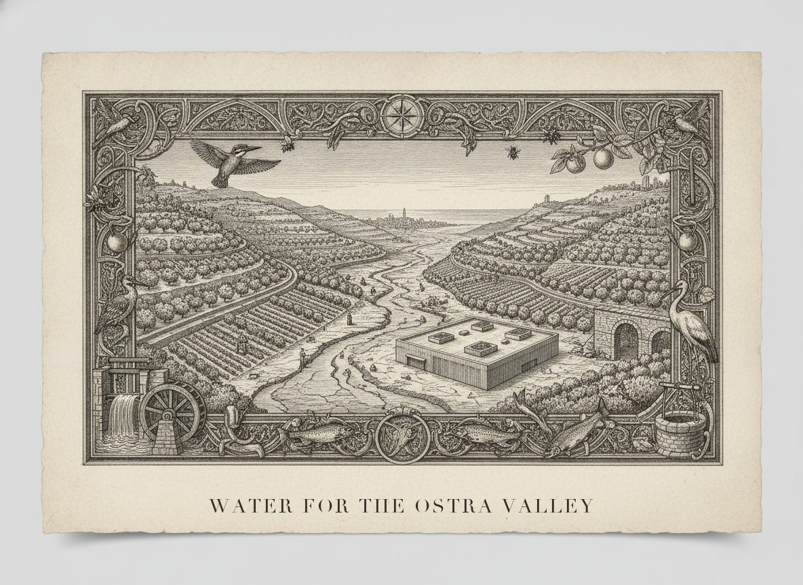
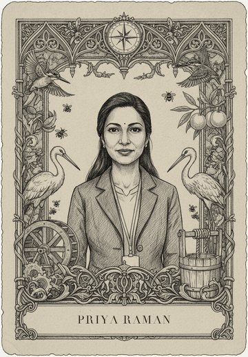
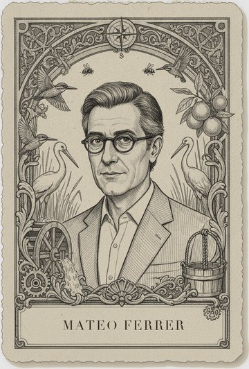
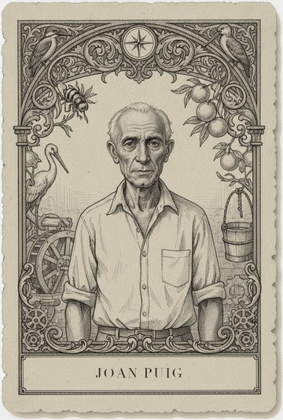
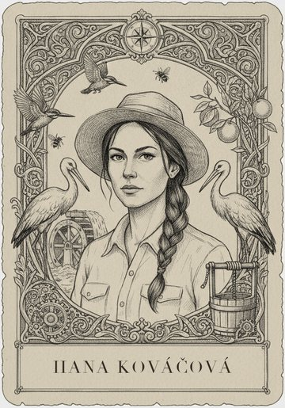
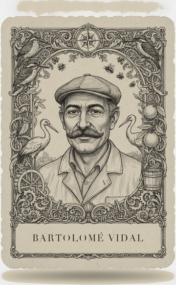
You need a river track numbered 0 to 20, a goal marker, a hidden flow marker behind a screen, and a pad of draw slips.
The Ostra starts the game at 14 units of summer flow. Before round one the table agrees a minimum summer flow and places the goal marker there.
- Each round is one summer. Every player secretly writes how much water their persona draws, from 0 to 3 units.
- The facilitator moves the hidden flow marker down by the total drawn. The river then recovers 4 units if it is above 8, and only 1 unit if it is at 8 or below.
- The table never sees this summer's flow. The gauge shows the flow from two summers ago.
- Whenever the gauge reads below the goal, the table votes on one of two answers. It can cut its draws next summer, or it can move the goal marker down one step.
The hidden turn. Moving the goal costs nothing during play. At the end, every step the goal moved costs every player one point, because the city's intakes ran salty in each of those summers.
Debrief. Who first proposed lowering the goal, and what made it sound reasonable at the time?
Game 2
Sealed Letters
Fixes that fail · Kessel Coal Pier · six players · about 45 minutes
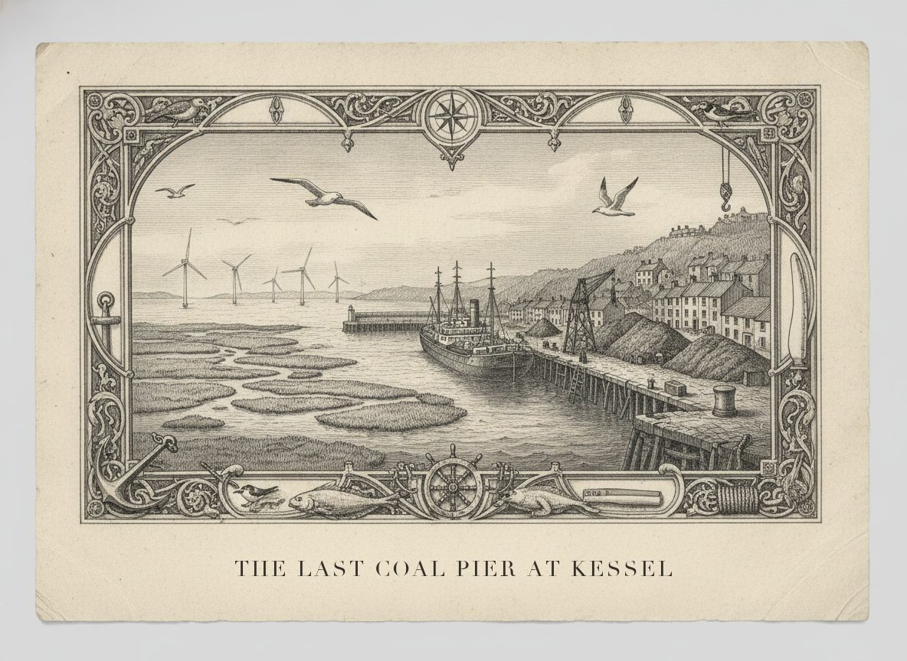
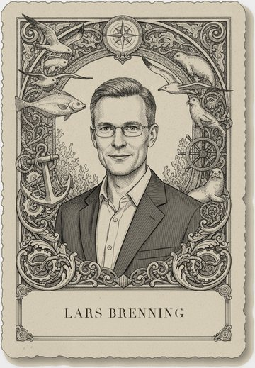
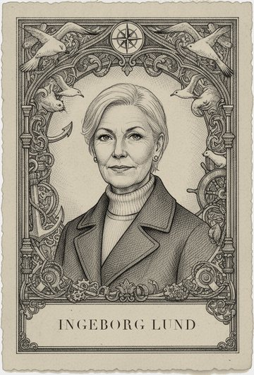
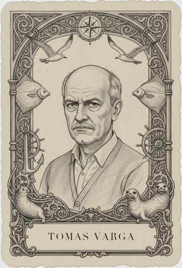
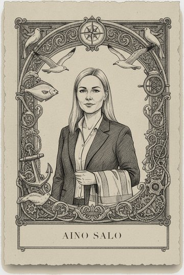
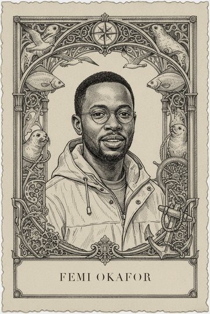
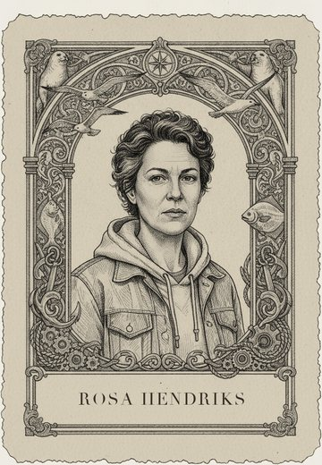
You need a deck of crisis cards, a hand of quick-fix and slow-cure cards for each persona, sealed consequence letters, and a round track with pins.
Each persona holds three quick fixes and two slow cures written for their role. Every quick fix has a sealed letter that only the facilitator has read.
- Each round a crisis card turns up, such as ferry fares jumping, twenty dockers laid off, or the marsh plaice count falling.
- The persona the crisis hits answers it with a quick fix or a slow cure, and may ask the table for help.
- A quick fix ends the crisis at once. The facilitator pins its sealed letter to the track three rounds ahead.
- A slow cure costs the table two points now and ends the crisis two rounds later.
- When the track reaches a pinned letter, the letter is opened and read aloud. Most letters start a new crisis.
The hidden turn. The letters are written so that each quick fix's side effect falls on a different persona. Aino's cut in harbour dues, for example, comes back as a hole in the port budget that raises Tomas's ferry fares.
Debrief. Which letter surprised you, and whose quick fix wrote it?
Game 3
The Wet Line
Thresholds and change that will not reverse · Cairnmoor · six players · about 40 minutes
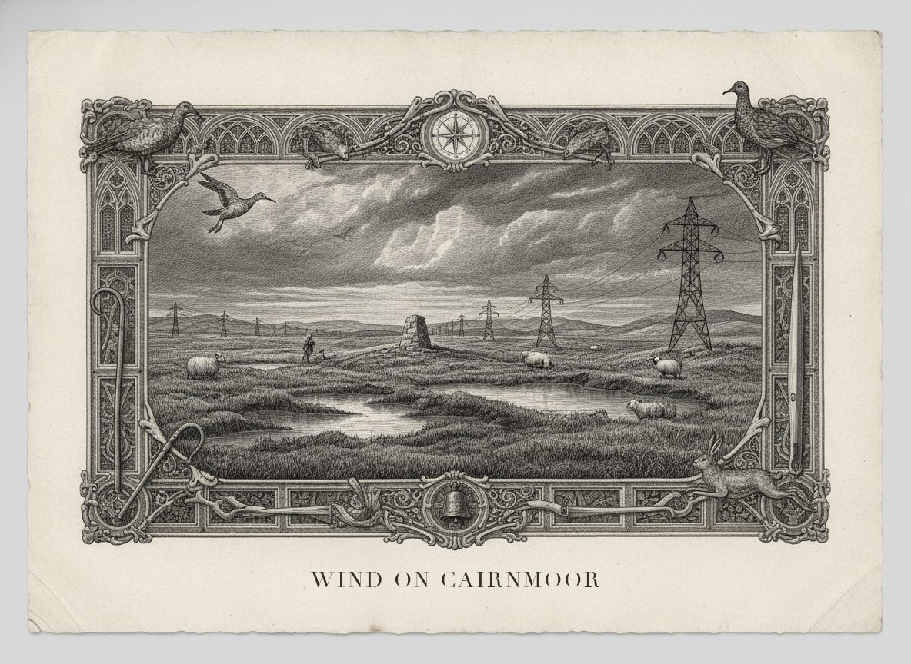
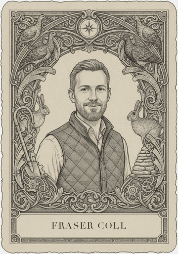
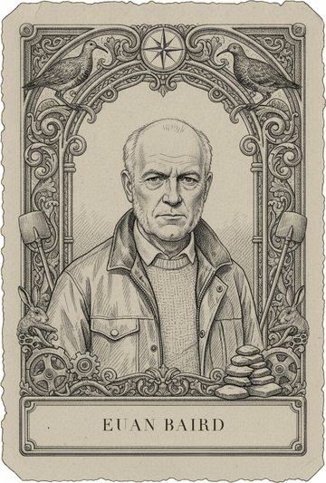
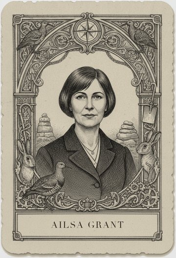
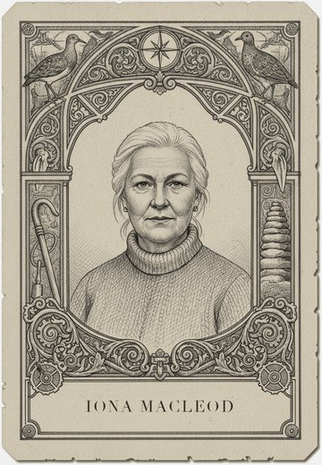
You need a moor board of twelve squares, turbine, track and drain tokens, money tokens, and a water-table dial that only the facilitator can see.
Every square of the moor starts wet. The facilitator sets the dial at notch 0 and knows that the peat begins to dry at notch 7.
- Each round the table proposes works on the moor: a turbine pad, a track or a drain.
- A work passes by majority. It pays money to the personas it helps, and it moves the hidden dial one notch.
- Nothing on the board changes while the dial is below 7.
- Once the dial passes 7, one square dries each round and starts losing carbon, which costs every player a point per round.
- A dry square can be rewetted, but rewetting costs three times the money the works on it earned.
The hidden turn. The table learns where the line was only after it has crossed it. Kenji's brief contains a warning he can give at any time, but his warning names no number.
Debrief. In which round did Kenji warn you, and what would have made the table act on it?
Game 4
First Money
Success to the successful · Willow Polder · six players · about 35 minutes
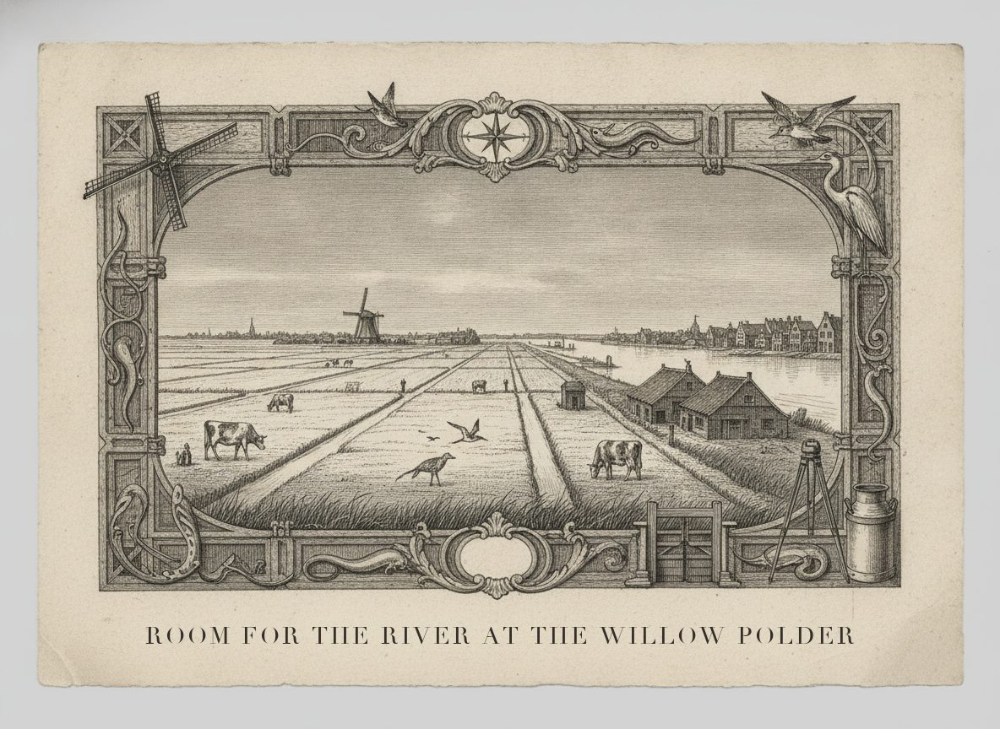
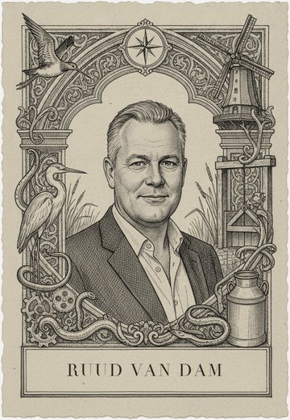
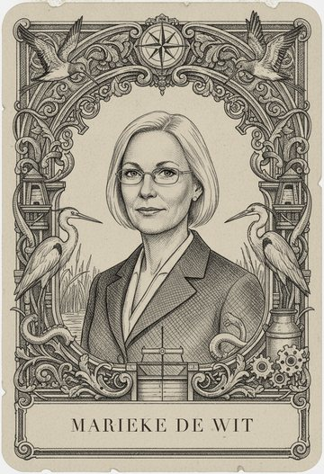
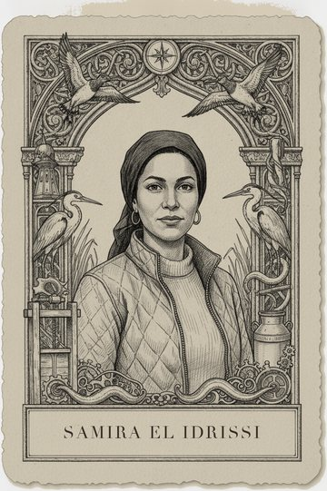
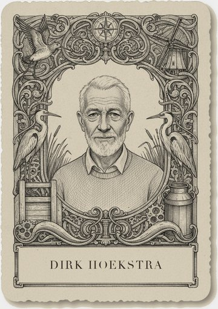
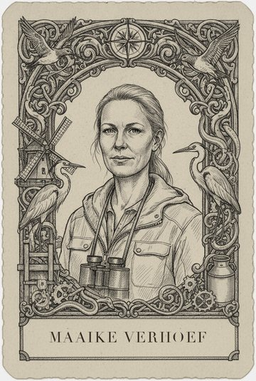
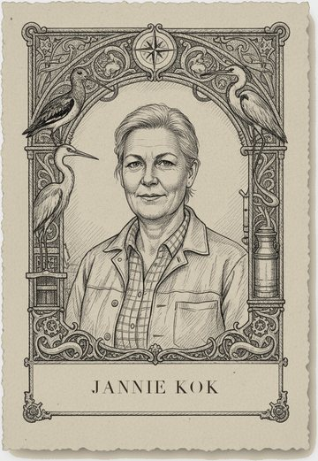
You need grant tokens, two project boards (the Lowtown flood wall and the polder farms' drainage), and a proposal score sheet.
The table splits into two camps for Lowtown and for the polder farms. Dirk Hoekstra holds the Water Board's six grant tokens each round. The first round's split was decided in advance by a coin toss.
- Each round both camps write a proposal, and the table scores it openly against the same five questions.
- The camp that received more tokens last round adds one point to its proposal score, because it now has staff and plans ready.
- Dirk must give the larger share to the higher score or explain to the table why not.
- The game runs for five rounds.
The hidden turn. By round five one camp usually holds nearly every token. At the end the facilitator reveals that the first-round split came from a coin toss.
Debrief. What rule would have stopped a coin toss from deciding the polder's future?
Game 5
Dues Down
Escalation · Kessel Coal Pier · six players · about 30 minutes
You need a dues dial for Kessel, a second dial for the rival port of Harlsund run by the facilitator, ship tokens, and a port budget track.
Kessel and Harlsund both charge 10 in harbour dues. Lars Brenning's wind company will send its ships to whichever port is cheaper.
- Each round the Kessel table secretly sets its dues, and Harlsund sets its dues at the same time.
- Ships go to the cheaper port, and dues are paid into that port's budget.
- Aino needs the budget to stay above 40, or the port cannot pay the dockers Rosa represents.
- The game runs for six rounds, or until a port's budget runs out.
The hidden turn. Harlsund follows one fixed rule that the table is never told: it matches Kessel's last price and goes one lower. Every cut Kessel makes produces another cut. The spiral stops only if Kessel holds its price or calls Harlsund, which the rules allow at any time.
Debrief. When did you work out that Harlsund was reacting to you, and why did no one pick up the phone sooner?
Game 6
Six Maps
Mental models and where the boundary is drawn · Any of the four places · six players · about 45 minutes
Any six personas from one place.
You need a deck of forty cause cards for the chosen place, a pen for each player, six large sheets, and a camera or a light table.
Each persona takes one sheet and works alone. Nobody may look at another sheet.
- In ten minutes each player builds the place as their persona sees it. They choose which cards belong, lay them on the sheet, and draw arrows for what causes what.
- The six sheets are photographed and laid over each other.
- Cards that appear on all six sheets are shared ground. A card that appears on only one sheet is either someone's blind spot or someone's private knowledge.
- The table then writes one deal that may rely only on links that at least two sheets share.
The hidden turn. Two cards in the deck matter only to someone who knows a private fact, such as the household water bills in the Ostra Valley or the marsh nursery at Kessel. Only the personas whose briefs mention them know to place them.
Debrief. Whose sheet had the card that everyone else left out, and what did it change once you saw it?
Game 7
The Tug on the River
Policy resistance · Ostra Valley · six players · about 30 minutes
You need one river-level marker on a track from 1 to 15, ten effort tokens per player, and a sealed target card for each persona.
The river marker starts at 8. Each persona has a secret target level. Hana and Lucía want the river high, Joan and Bartolomé want water left for irrigation, and Priya wants it steady in the middle.
- Each round every player spends effort tokens to push the marker up or down toward their target.
- The marker moves by the net push, so opposing pushes cancel.
- Spent tokens are gone. A player with no tokens left cannot act on anything else in the place for the rest of the game.
- After four rounds, everyone reveals their target.
The hidden turn. The marker barely moves while the tokens run out. The targets, once revealed, overlap in a band two levels wide. A table that stops pushing and agrees on that band keeps its tokens for other work.
Debrief. How many tokens did your persona spend to keep the river where it already was?
Game 8
Where to Push
Leverage points · Willow Polder · six players · about 45 minutes
You need twelve intervention cards, from changing a number up to changing what the polder is for, a credit purse for each player, and a small spreadsheet model the facilitator runs.
Each player has ten credits. A card that changes a number, such as the levy rate, costs 1. A card that changes who sees what costs 3. A rule change costs 4, and a change of goal costs 6.
- The table pools its credits and buys a set of cards together.
- The facilitator runs the model for ten years of the polder and shows the result: floods in Lowtown, farm income, meadow birds and debt.
- The table plays a second round with the same credits and buys again.
The hidden turn. The cheap cards feel decisive and move the result least, and most tables buy several of them first. The idea that a system's goals and rules move it more than its numbers comes from Donella Meadows' essay on leverage points.
Debrief. Which card did you buy first, and why did it feel like the obvious place to start?
Game 9
The Inheritance
Long time horizons · Cairnmoor · six players · about 40 minutes
You need a persona card and a running score sheet for each persona, and a moor board.
Each player starts with one persona. Each round stands for twenty years on Cairnmoor.
- Each round the table negotiates and decides what happens on the moor, as in the main game.
- At the end of the round every player passes their persona card and its score sheet to the player on their left.
- The new holder inherits everything the last holder did, including a drained square, a loan or a turbine lease.
- The game runs for five rounds, which is a hundred years.
The hidden turn. Each player's final score is the score of the persona they hold at the end, not of the ones they played.
Debrief. Which decision did you make knowing that you would not be holding that card when it came due?
Game 10
The Hall Meter
Information flows · Kessel Coal Pier · six players · about 35 minutes
You need action cards for each persona, five meter boards (marsh plaice, ferry fares, docker jobs, port debt and carbon), and a public tally sheet.
Every action a persona can take moves one or more of the five hidden numbers. At the start no number is visible to anyone.
- Each round every player plays one action card for their persona.
- The facilitator updates all five hidden numbers.
- At the end of each round the table may install one meter. The meter shows its number to everyone for the rest of the game, along with a tally of who moved it.
- A meter costs nothing to install.
The hidden turn. The rules never change, yet actions change as soon as a number becomes visible, because no one wants their name on the tally. The facilitator scores the five numbers at the end, so the table sees what it did and did not choose to measure.
Debrief. Which meter did the table refuse to install, and who was relieved?